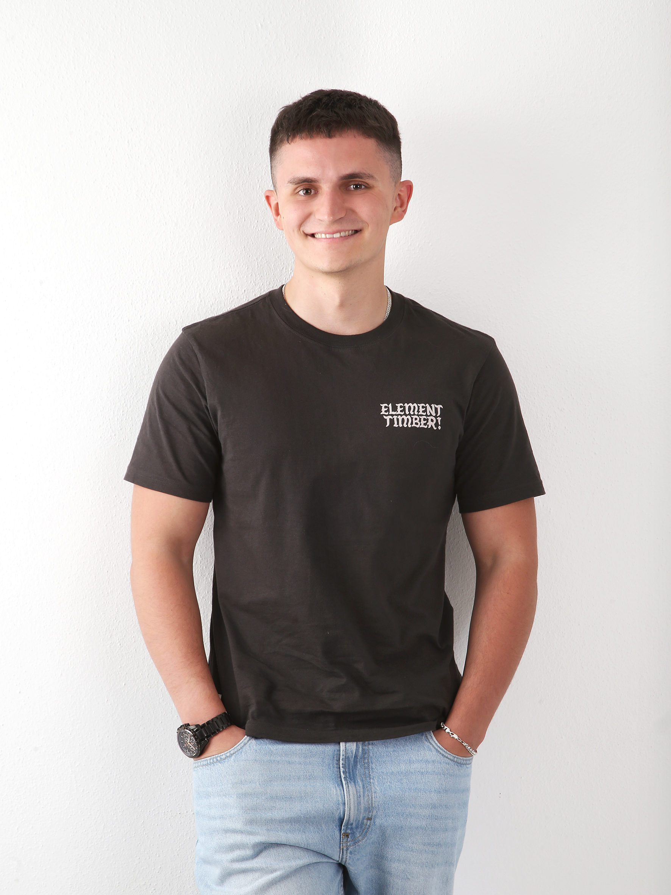

I’m a software developer skilled in C, Java, PHP, Python, and JavaScript, fluent in Portuguese,
Ukrainian, and advanced English (C1). Currently studying Computer Engineering, I focus on building
practical solutions and improving with every project.

2022 - 2025
Instituto Politecnico de Leiria | Portugal, Leiria
Bachelor on Computer Science
2019 - 2022
Escola Secundária de Francisco Rodrigues Lobo | Portugal, Leiria